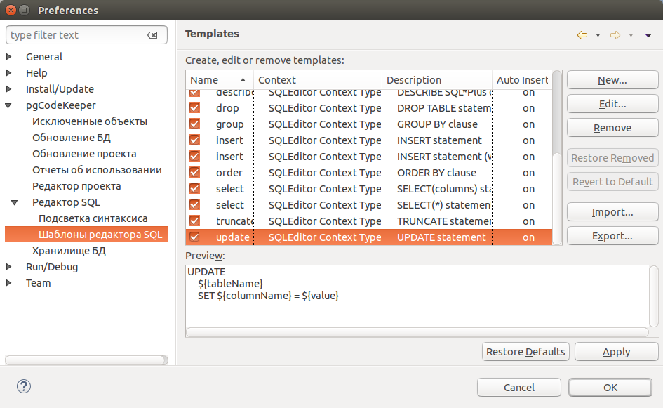

Создание, удаление и редактирование шаблонов для автоподстановки в sql редакторе

На странице настроек pgCodeKeeper -> Редактор SQL -> Шаблоны редактора SQL Вы можете управлять SQL шаблонами, доступными в SQL редакторе. Список доступных действий отображается справа от списка шаблонов.